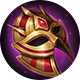
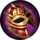

Presa de Lobo
Presa de Lobo
 Correntezas
Correntezas
Regras
 Olho de Águia
Olho de Águia
Geleira
Graça Divina
Este é um site feito por fã em homenagem ao Champions Legion!


 



Presa de Lobo
Correntezas
Regras
Olho de Águia
Geleira
Graça Divina
Morus é um mago de avanço e que tem uma boa capacidade de dano e de sobrevivência(graças ao roubo de vida mágico). Como todo mago, deve farmar e gankar. Procure boas situações para entrar com a ultimate e causar estrago.
Morus requer uma habilidade a mais em posicionamento, uma vez que não utiliza o flash como feitiço(dificultando fugas), no entanto, o uso do perturbar permite que ele dê boas ultimates, inclusive debaixo da torre inimiga, quando houver oportunidade.
Nas teamfights, Morus deve esperar o tank começar a luta para então entrar no meio dos inimigos. Vale lembrar que, embora ele tenha uma sobrevivência legal, ele NÃO É UM TANK.
Use a ultimate para avançar, uma carga da 1 para ir causando dano e roubando vida, a 2 para causar o dano principal e a segunda carga da 1 para manter o ritmo.
Ordem de upgrade das habilidades: 3ª → 2ª → 1ª.